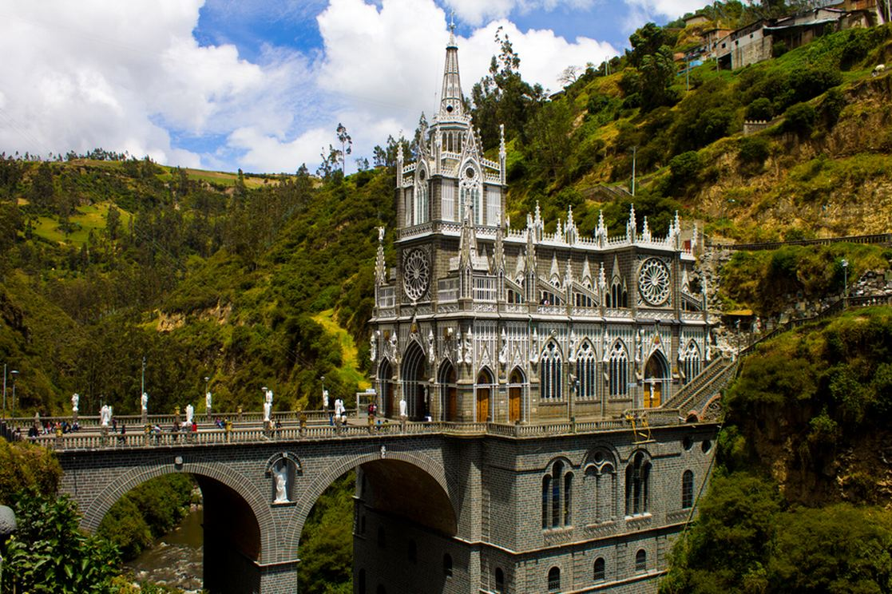
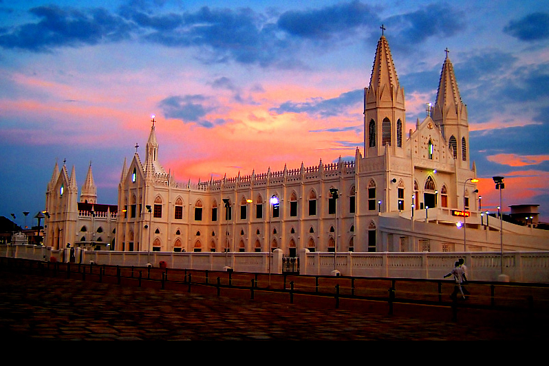
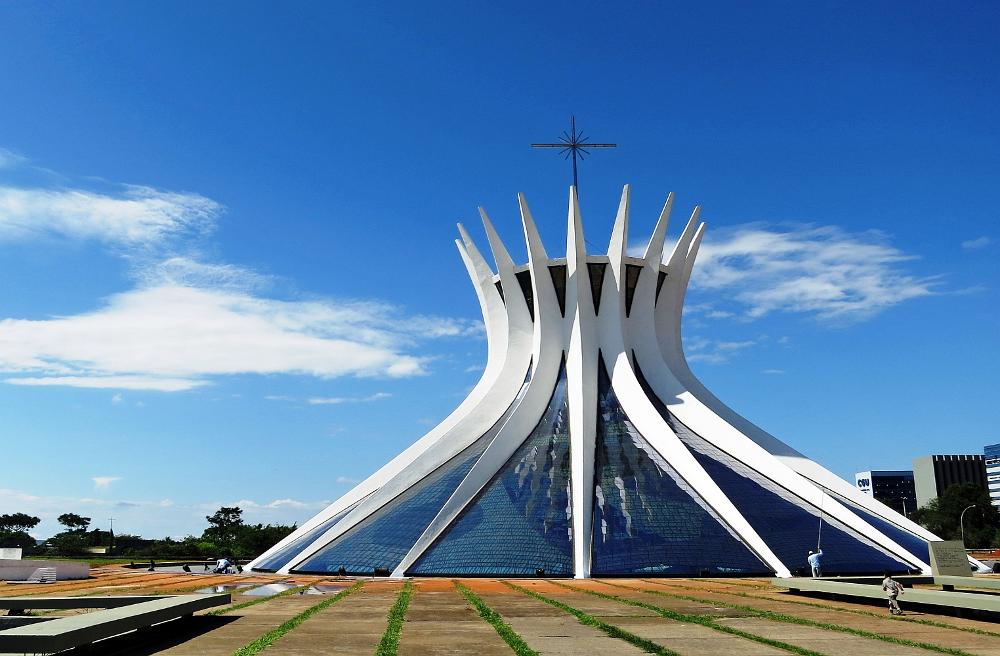
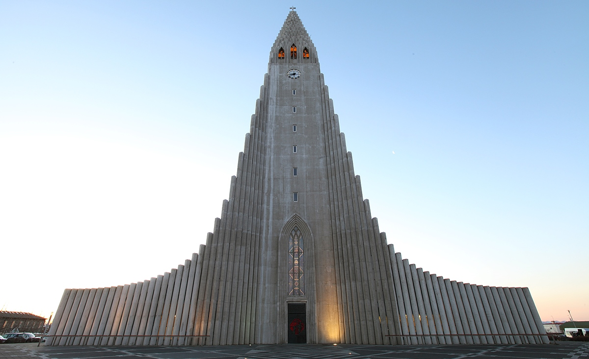
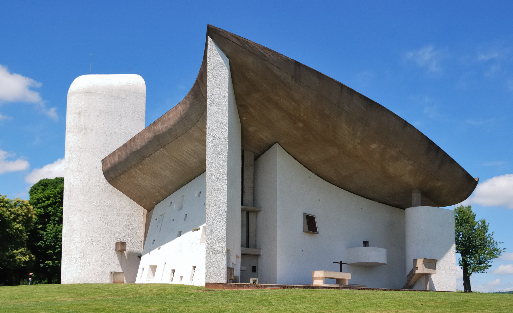
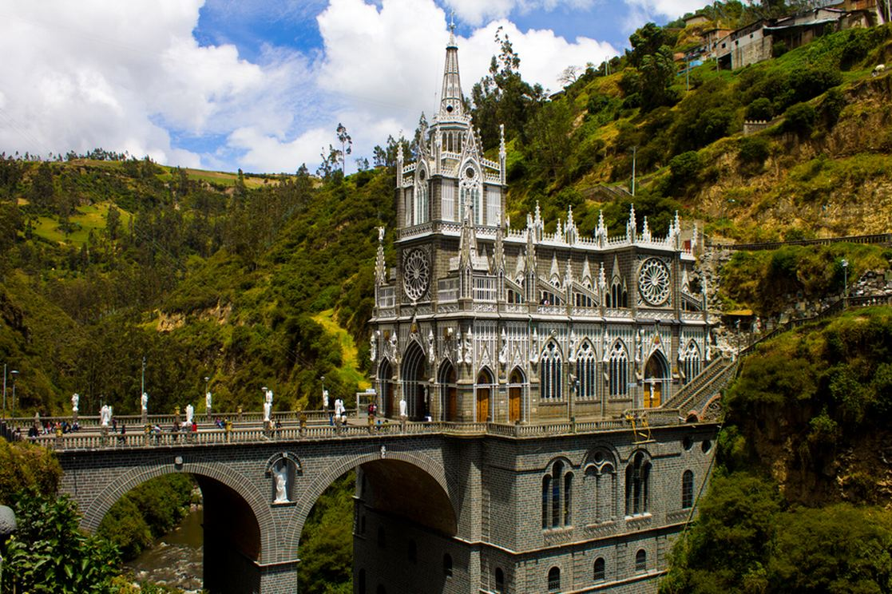
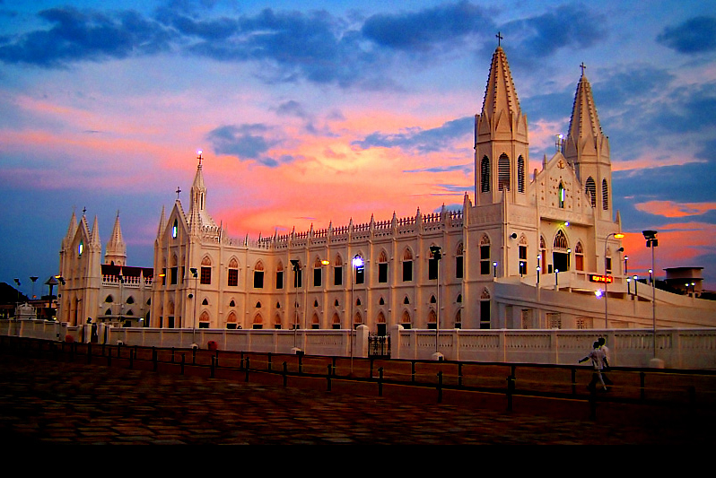
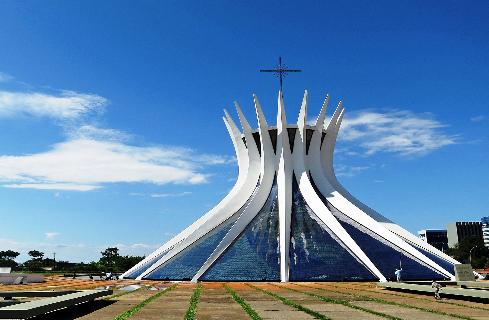
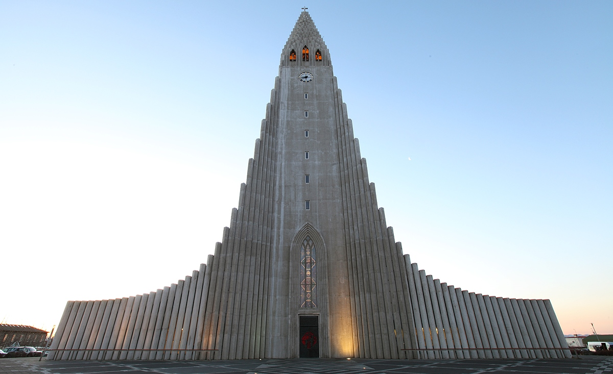
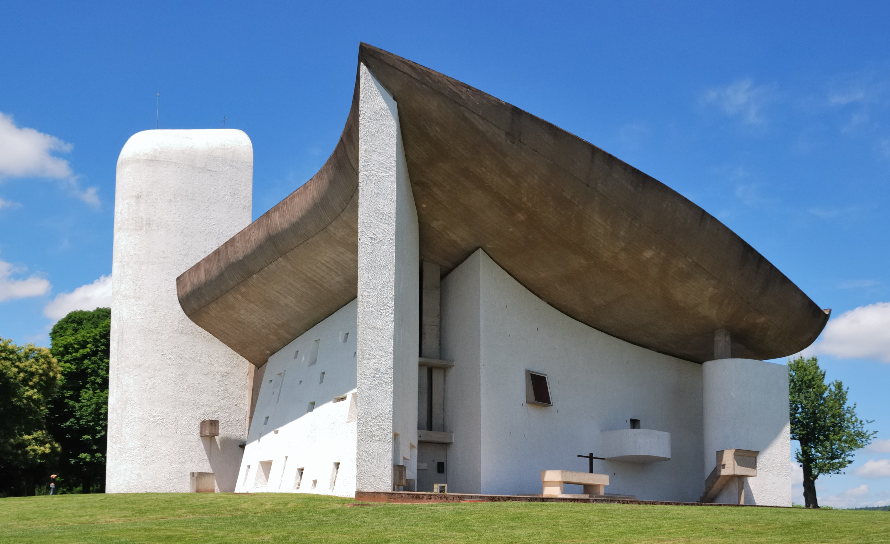

Christianity began as a small sect of Judaism and transformed into the most practiced religion today. Christianity believes that Jesus Christ is the Messiah prophesied in the Old Testament to save humanity from their sins. The Bible is the central religious book of Christianity; it is a collection of scriptures written by different people at different times. Christianity has more than 2.4 billion adherents from all around the world.
- Christianity emerged at the beginning of the Roman Empire, at the east end of the Mediterranean.
- Christianity derived as a sect of Judaism. Jesus of Nazareth was born Jewish, so were his 12 deciples.
- Jesus was put to death in AD 30: he was seen as an agitator to rich people and to the government.
- Jesus was conceived by the Holy Spirit and born to the Virgin Mary in Bethlehem.
- Over the years, the church gradually divided into two sections, the Western Catholic and Eastern Orthodox branches.
- Jesus’s resurrection made him known as the Son of God and the religion spread throughout the Roman Empire and in Jewish communities in the Middle East.
- Slave, dispossessed farmers, and impoverished city dwellers found hope in Christianity.
- There are many different denominations of Christianity, including Catholicism, Methodism, Presbyterianism, Southern Baptist, and Lutheranism.
- Christians believe that Jesus will come again to earth in the Second Coming of Christ one day to judge humans for their sins and to grant eternal life to those who believe and follow his teachings.
- The religious professionals of Christianity include priests, bishops, archbishops, patriarchs, pastors, ministers, preachers, and deacons.
- The most important Christian holiday is Easter which celebrates Christ's resurrection from the dead.
CHRISTIAN ARCHITECTURE

 









❮
❯
Caption Text
CHRISTIANITYFAQ
Stuff to know.
Baptism is a ceremony through which a person can be cleansed of sin. Although baptisms are traditionally performed by immersing the individual in water, some faiths chose to sprinkle water instead.
Baptism symbolizes that the individual has turned from the old life of sin to a new life in Jesus Christ.
Denominations of the Christian faith started around the time of the Protestant Reformation during the 16th century. This movement was caused by the desire to reform the Roman Catholic Church because people were
questioning their practices. During this time 4 major divisions emerged: Lutheran, Reformed, Anabaptist, and Anglican. Over time, these four divisions produced many other denominations. Frequently, denominations only differ in the style of worship to adjust to different preferences.
Christianity and Judaism are very similar, especially in their form of worship, including a priesthood, concepts of sacred space and sacred time. The main distinction between Christianity and Judaism is the perception of Jesus.
Judaism believes Jesus was a good teacher, but he was not Messiah. Christians believe Jesus Christ is the fulfillment of the Old Testament prophecies of a coming Messiah.
The final week of Lent is known as “Holy Week.” It begins with Palm Sunday, remembering Jesus' entry into Jerusalem just before his Passion.
Holy Thursday recreates the Last Supper in which Jesus fed his disciples on the night before he died and washed their feet. Good Friday was the day that Jesus was crucified to death. Holy Saturday is recreated because of the time of waiting while the body of Jesus lay in the tomb. Lent ends either with the Great Easter Vigil on Easter Eve, or with the Easter Day service.
Christians as a whole are divided on the topic of abortion. The bible never explicitly mentioned abortion. The beliefs of Christians range from extremely pro-life to extremely pro-choice. Although there is no general agreement on the topic, most Christians would agree to avoid having an abortion if satisfactory alternatives are available.
Numerous churches, like United Church of Christ, Episcopal, Presbyterian and United Methodist, support a woman's choice to have abortion if she believes it is the best choice. A survey conducted by LifeWay, a Christian research group, showed that 70% of the 1,038 women they interviewed who has abortions were Christian.
Catholics believe in the Real Presence of Jesus in the Eucharist, so the bread and wine is really Jesus’ body and blood. Receiving the Eucharist symbolize unity among all those in communion with the Catholic Church around the world. As a result, only those who believe in the Real Presence can receive the Eucharist.
The Orthodox Church does not have a single spiritual leader like the Pope is to the Catholic church. It is organized into “jurisdictions” following national and historic lines, based on the early Church model of conciliar church leadership seen in the Book of Acts.
Each group is governed by synods, which are councils of bishops. Synods have equal authority and do not interfere in one another’s affairs. The Patriarch of Constantinople is known as the “Ecumenical” Patriarch.
Since the division of the Roman Catholic Church from the Eastern churches, he has enjoyed a position of honor among the Orthodox communities.
They are beneficial laws intended to guide us to live a better life. God himself spoke the 10 commandments from Mount Sinai.
Moses recorded the commandments in Exodus 20 and Deuteronomy 5. Obeying the commandments is necessary for gaining eternal life because disobeying the commandments translates to a lack of love for God.
The word Trinity is made up of “tri”, meaning three, and “unity”, meaning joined as a whole. The trinity is God the Father, God the Son, and God the Holy Spirit. There is only one God but His nature has 3 personal distinctions.
God is not limited to a three-dimensional universe. God the Son can be the same as God the Father, but also different. Each is different from the other, but they do not act independently; they are one in nature.
MORE RESOURCES
- General Info: https://www.khanacademy.org/humanities/medieval-world/medieval-europe/a/christianity-an-introduction
- General Info: http://www.factslides.com/s-Christianity
- General Info: http://www.commisceo-global.com/blog/a-brief-introduction-to-christianity
- More FAQs: http://www.clarifyingchristianity.com/faq.shtml
- More FAQs: http://www.christianbiblereference.org/faq_abortion.htmli>
- More FAQs: http://www.catholic.com/tracts
- History of Christan Art: https://www.britannica.com/art/Early-Christian-art
- Christian Architecture: http://www.nationalgeographic.com/lostgospel/timeline_23.html
- Christian Holidays: http://www.religionfacts.com/christianity/holidays
- Basic Beliefs: http://www.bbc.co.uk/religion/religions/christianity/beliefs/basics_1.shtml